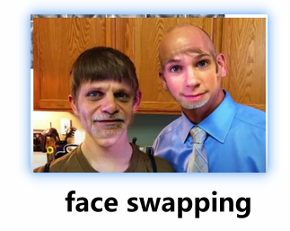
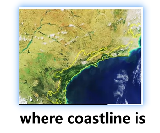
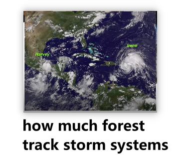
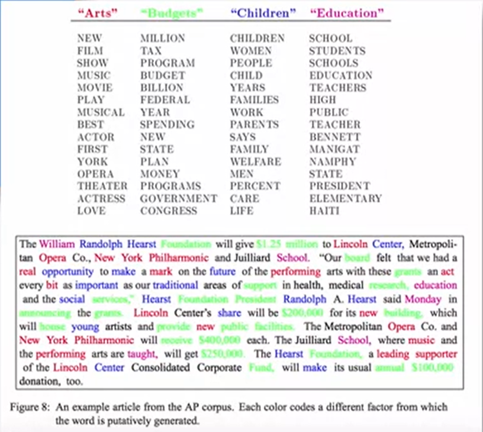
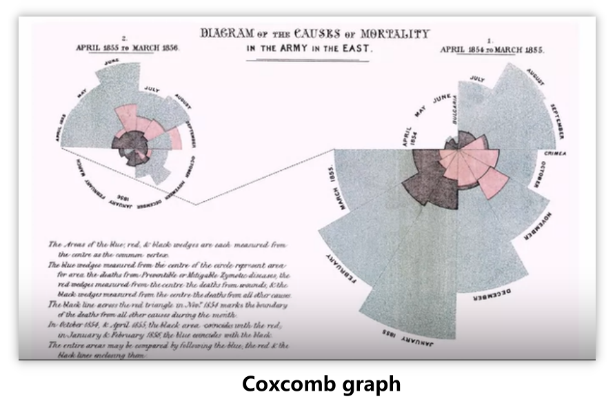
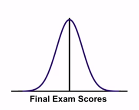

Start with Me | Coursera - Understanding and Visualizing Data with Python week 1-2 - Data
Start with Me 系列终于又又更新啦，写到比较重要的部分才发现已经写了很多乱七八糟的，所以还是等下一次更新吧
Cool Stuff in Data
Data can be anything.
Data can be Numbers
This is what oftentimes people will think about when they think of data.
You’ll think about a spreadsheet or something like that.
Dataset in this course – National Health and Nutrition Examination Survey
- a form that has a lot of numbers in it
- the third one stands for gender, and has numbers representing whether the person is female or male
数据可以是数字
很多时候人们一想到数据就会想到一个电子表格或者类似的东西
- 课程使用的一个数据集：国家健康和营养调查
- 可以认为是一个表格，里面有很多数字
- 例如第三个变量代表性别，由数字代表这个人是男性还是女性
Data can be Images
If you have a lot of faces, there’s this idea called Eigenfaces. This represents your faces in number.
So researchers can look at the faces in an image and represent them in numbers, and do a lot of really neat things with them.
Snapchat – face swapping
These Eigenfaces are really helpful in identifying where faces are, and changing where those faces are on specific people.
 Smartphones taking pictures / Facebook– facial recognition
When you’re taking pictures, they’ll put boxes around faces.
When you upload pictures, you can use facial recognition software to tag the people who are in those images.
Using satellite images
estimate where coastline is
 how much forest
track storm systems

数据可以是图像
特征脸 —— 寻找人脸图像分布的基本元素，即人脸图像样本集协方差矩阵的特征向量，用来近似地表征人脸图像，这些特征向量被称为特征脸
- Snapchat —— 换脸
- 手机内置相机 / Facebook —— 面部识别
- 利用卫星图像
- 估计海岸线在哪里
- 在特定区域的土地有多少森林
- 跟踪风暴系统的进展，回顾其所造成的破坏程度
Quick Draw
点击这里，快速涂鸦
神经网络能学会辨识涂鸦吗？
只要将你的涂鸦作品添加到全球最大的涂鸦数据集，即可协助训练神经网络辨识涂鸦
“你画我猜”， 快来贡献你的涂鸦作品吧
Data can be Words
An idea of looking at the entire text of Harry Potter, and estimating what a sample chapter might be.
Botnet generated Harry Potter and the portrait of what looked like a large pile of ash.
What they did is they went through the entire text of all seven Harry Potter books and used various algorithms and predictive text forms to generate a new chapter in Harry Potter.
An idea of electronic health records.
> * There are a lot of words in your health records, but they do contain a lot of different data about you.
match your health records between different locations based on name and other identifying characteristics
allow somebody to get a really good sense of your entire health history from different locations of your health records
An idea of document classification



- if you look through a newspaper and you’re trying to classify
- you can look at the words that are used, and estimate whether it belongs in the business, the sports, or the local section based on the words that are used.
An idea of debiasing word embeddings
- Weird papers like Man is to Computer Programmer as Women is to Homemaker.
- We want to try to make those word embeddings potentially debiased if there are some biases located in them.
数据可以是文字
看《哈利波特》的整个文本，估计一个样本章节可能是什么
- Botnet 翻阅了全部七本《哈利波特》的文本，并使用各种算法和预测文本来生成新章节
电子健康记录
你的健康记录里面有很多字，包含了很多关于你的不同数据
根据姓名和其他特征在不同位置之间匹配你的健康记录
有人可以从你的健康记录的不同位置，对你的整个健康史有一个好的认识
文件分类
- 查看整个文档，例如报纸，看看使用的词
根据使用的词来判断它是属于商业版、体育版还是地方版
- 所有的词都有含义和嵌入在其中，在读到这些词的时候，它们有不同的内涵
去掉词嵌入
- 像 “男人之于程序员，女人之于家庭主妇” 这样的奇怪论文
- 如果词中有一些偏见，尝试去掉这些词
Data can be Audio
You can think of all of the sound that you’re creating as various data formats.
voice identify
if you’ve heard a song on the radio and you want to know what it is
- some applications can identify where that sound is coming from
- giving you the song title and artist.
voice editing
use various Adobe Suite applications
allow you to change how your voice sounds
relocate various aspects of your voice
voice replication
- if you have a clip of a person saying something like 50 words
- You can do some edits and create a voice that sounds like the person saying everything that they need to say.
- You can have this theoretical person saying all sorts of clips and changing their voice around so it sounds like somebody is saying something when they’re not.
数据可以是音频
- 语音识别
- 听到一首歌，想知道它是什么
- 通过一些应用识别这个音乐来自哪里
- 给出歌名和歌手
- 语音编辑
- 使用Adobe套件应用对语音进行编辑
- 改变你的声音听起来的方式
- 重新定位你声音的各个方面
- 语音复制
- 有一个人的语音片段
- 对这个片段编辑，并创建一个声音，听起来就像这个人说的
A historical example – Florence Nightingale
Many people know Florence Nightingale as the founder of nursing. She was a nurse in the Crimean War.
One of the things that a lot of people don’t realize is that she also is one of the big founders of statistics.
So when she was going through and doing her nursing, she really advocated for collecting a lot of information on the patients as well as understanding what all of this data has contained within it.
One of the things that Florence Nightingale did is that she systematically recorded information about each of the soldier patients that she had. She looked at then, a Coxcomb graph is what she called it.
It’s really the foundation for a lot of the graphs that we use currently, whether it’s time series, box plots, or pie charts, and she looked at the causes of mortalities in the army.
 Looking at causes including preventable deaths from diseases, deaths that occurred from wounds, and overall mortality, and comparing how these mortality rates changed both over time, and how these different death rates changed based on the season.
一个例子 —— 弗洛伦斯 · 南丁格尔
护理事业创始人
统计学的奠基人之一
主张收集大量病人信息，了解这些数据都包含哪些内容
南丁格尔玫瑰图Coxcomb graph 是目前使用的很多图表的基础
如 ：时间序列、箱形图、饼状图
观察了军队中的死亡原因：可预防的疾病死亡、因伤发生的死亡、整体的死亡率
比较了这些死亡率在时间、季节上的变化
今天的数据有很多非常酷的应用，数据真的在你身边无处不在
Where Do Data Come From?
So going into a data analysis, we really want to have a good sense of where the data come from and there are some important questions that we need to ask when thinking about what process generated the data.
Different Types of Data
There are different types of data that we may ultimately be collecting in any kind of research study.
Two key types of data :
Organic / Process Data
“Designed” Data Collection
数据的不同类型
有机/过程数据
设计数据的收集
Organic / Process Data
Examples :
Financial or Point-of-sale transactions
Stock market exchanges
Netflix viewing history - predict what people may be interested in watching
Web browser activity
Sporting events
Temperature / pollution sensors
These processes generate massive quantities of data –> “Big Data”
baseball game
meals ordered at McDonald’s on a given day
changes in temperature on a given day in a particular city
processing requires significant computational resources
data scientists “mine” these data to study trends and uncover interesting relationships
有机 / 过程数据
是一个自然的有机的过程
是由计算机信息系统产生的数据；或许是从视频或音频记录提取的数据
共同点：它们是作为一些过程的结果而有机产生的，而且通常是随着时间的推移而产生的
例如：
金融/销售点交易、股票市场的交易
这些交易中，随着时间的推移会发生很多事件，所有这些不同的事件都会被记录下来，从而产生非常大的数据集
由 Netflix 的观看历史，预测用户可能对什么感兴趣
Netflix 对用户的整个观看历史进行记录，这创造了一个非常大的数据集，但它是有机地产生的，是根据用户的个人观看历史自然而然地产生的，结果是一个非常大的数据集
网页浏览器的活动记录
一个用户在各个网页上花了多少时间，访问了哪些网页，访问频率，这些数据都可以被记录下来，把所有这些不同的事件乘以所有不同的人，就会发生一系列巨大的事件和交易
体育赛事
体育赛事的结果、个人表现、不同的团队，这些数据都是作为一些过程的结果而有机产生的，这就形成了非常大的数据集
温度、污染传感器
如果试图了解一个大城市的污染问题或温度的变化，研究人员可能会在不同地点设置气象站或温度检测器，并收集一段时间的数据。每秒钟在特定区域对温度或污染的各种测量数据可以展示随着时间的推移可能会发生什么
上面的这些过程，都会产生海量的数据 –> 大数据
大数据其实指的是这些类型的数据集，这些数据集来自于有机的过程，随着时间的推移，有很多的交易或有兴趣分析的事件的趋势，但是这些数据集是海量的
棒球比赛；某一天某一家麦当劳点餐情况；某一个城市某一天的温度变化
数据的处理需要大量的计算资源
数据科学家要做的就是挖掘这些数据来研究趋势/发现有趣的关系
仅仅是把数据转换为适合分析的格式，这个过程就需要非常多的资源
需要很多受过计算机科学和统计方法学训练的人，才能真正形成对分析有用的数据集
“Designed” Data Collection
Designed to specifically address a stated research objective
Individuals sampled from a population, interviewed about opinions on a particular topic

Common features of “designed” data
- Sampling from populations, administration of carefully designed questions
- Typically data sets much smaller compared to organic data sets
- Data collected for very specific reasons, rather than simple reflections of ongoing natural process
设计数据的收集
是特定的研究，旨在专门解决一个特定的研究目标
可以是人群中抽样调查的个体，然后采访他们对某一特定话题的看法
因为在目标人群中可能很难衡量每个人，所以可以设计个体样本，向个体提问，试图了解更多关于目标人群的信息
可以从Twitter上获取推文，然后对其进行编码
分析人们可能对某个特定主题表达意见的频率
这些都是非常严格设计的数据集合，而不是仅仅是人们可能有兴趣看的有机的大型数据集
设计数据的共同特点是，从人群中进行抽样，或者从较大的人群中对小样本进行精心设计的调查问题的管理
设计的数据集 VS 有机/过程数据集
设计的数据集
一般要小得多，更容易处理，数据的收集是出于非常具体的原因
有机数据集
非常大，简单地反映一个持续的自然过程
Are the Data IID ?
IID : independently identically distribution
For analyzing data, regardless of source, an important question:
Can the Data be considered IID ?
independent
no correlation between the different measurements
identically distribution
the values that we observe arise from some common statistical distribution
IID
no correlation + common statistical distribution
Example: Final exam scores
from a large Intro to Stats class at a university are independent observations from a common normal distribution

数据是独立同分布的吗？
对于数据分析来说，不管数据来源是什么，都需要问一个重要的问题
“ 数据是否可以认为是独立同分布的？”
独立
观测值之间没有相关性
- 在独立同分布情况下，对一个感兴趣的变量的观测是完全 独立于 所有观测值
- 从人口中的不同单位、不同的股市交易所、不同的棒球比赛、不同的个人回答调查的不同测量值之间没有相关性
- 所有这些观测值都是独立于所有其他观测值的，这些观测值可能最终构成一个数据集
同分布
观测值来自于共同的统计分布
- 实际观察到的所有数值都来自于一些共同的统计分布，所以这就是独立同分布的同分布部分
独立同分布
所有的观测值都是独立于其他所有的观测值的，而要看的值都是由一些共同的统计分布产生的，这就是独立同分布
例子：大学统计学导论的期末考试成绩
独立的观测值 + 来自于共同的正态分布
- 可以把这些成绩看成是 独立 的观测值，每个学生都在提供自己的答案，每个学生的成绩都在被单独评分，这些考试成绩是独立的观测值
- 代表这些期末考试成绩的值，可能会 遵循一个自然的正态分布 （钟形曲线）
- 给定这些独立同分布数据，可以估计出这个分布的特征，比如考试分数的平均数、方差，然后对这些特征进行推断
独立同分布是一个重要的假设，可以使得我们对人群特征进行推断
What if Data are NOT IID?
Examples:
- Students sitting next to each other tend to have similar scores
break the assumption of independence
- Males and females might have different means
not arise from an identical distribution
Dependencies and differences need to be accounted for in analysis
Need different analytic procedures
We need to consider where the data came from
- Did they come from some organic process ?
- Could that process have introduced dependencies in the data ?
- Did they come from a design data collection ?
- Where we may need to account for the features of that design ?
如果数据不是独立同分布
例子：
坐在一起的同学可能会互相作弊，有相似的分数
打破了独立性假设，坐在同一区域的学生可能会有相似的分数，这些分数依赖于其他学生的分数
男性和女性的考试分数平均值可能不同
遵循不同的分布，打破了同分布假设
在上面这些例子中，比如，临近同学成绩的相似性、男性和女性之间的差异，这些数据可能不是完全独立、不是相同的分布
当数据不是独立同分布的时候，在分析时就需要考虑到这些依赖性和差异，需要不同的分析程序
需要考虑数据的来源：
- 是否来自于一些有机过程 ？在这个过程中是否会在数据中引入依赖性 ？
- 是否来自于一个设计数据的收集？考虑这个设计的特点
在之后的课程中，会在讲抽样的时候提供更多关于独立同分布思想中设计数据收集的细节，以及在设计样本的情况下会使用的分析程序
End
Data can be anything
数字、图像、文字、音频
Types of Data
有机的数据
非常大数据集、有机产生、反应持续的自然的过程
设计的数据
数据集小、易处理、针对特定的研究目标
IID
独立同分布
本博客所有文章除特别声明外，均采用 CC BY-SA 4.0 协议 ，转载请注明出处！